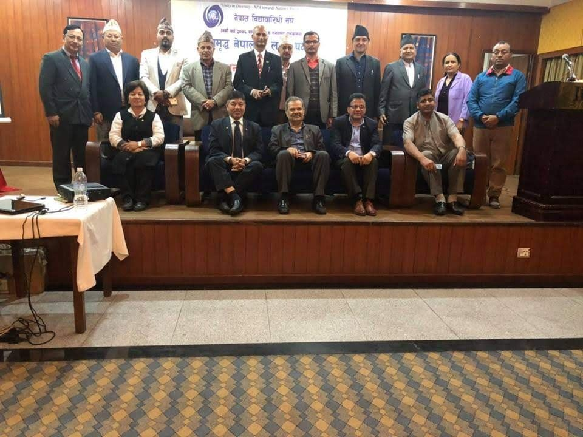

Bagmati Province Tourism Strategy
A roadmap for infrastructure, people, marketing, regulation and inclusive tourism. Identifies the province’s key tourism assets and positions Bagmati as a leading destination at national and international level.
